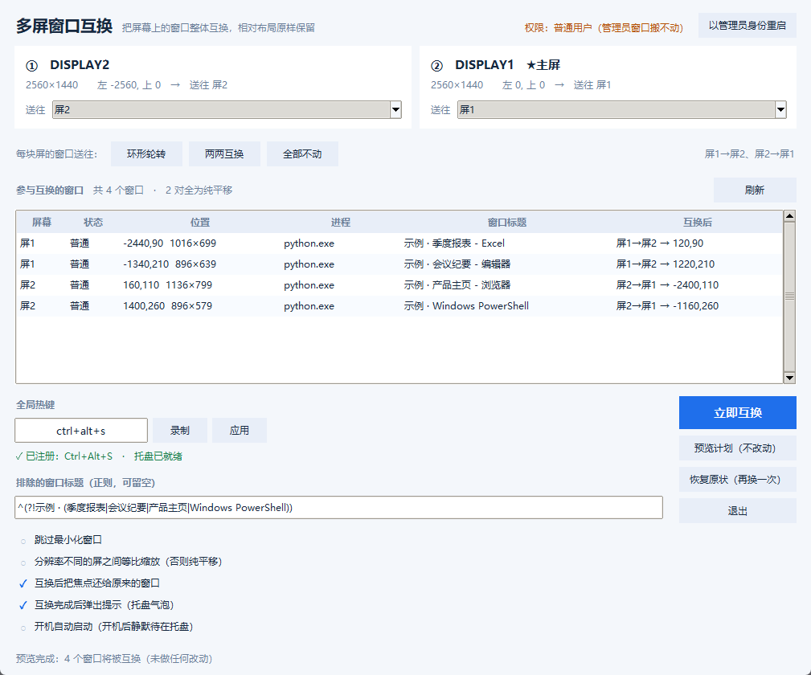

左边屏的开发环境、右边屏的浏览器和文档 —— 一个热键全部对换， 贴附好的布局原样保留。最大化的还是最大化，左右分屏的还在原来的相对位置。 三块屏以上还能环形轮转，或者任意指定哪块屏送往哪块屏。
默认热键 CtrlAltS，可在界面里改成任意组合
如果你也每天在两块屏之间来回搬家，这三个场景大概很熟悉。
窗口从一块屏搬到另一块，得逐个拖过去、再逐个摆回原来的相对位置。手忙脚乱，还容易把某个窗口漏在错的那块屏上。
系统吸附本来是对齐好的，手拖过去就再也不是原来那个比例了。用 Win+方向键又得每个窗口重来一遍。
接上投影、开完会、切回原来的布局 —— 又是一次手工搬家。这种事一天要发生好几次。
不是简单的「把窗口挪到另一块屏」，而是把整块屏的布局当作一个整体来搬运。
默认 Ctrl+Alt+S，任何窗口下按下即生效；也可以在界面里点按钮，或者改成你习惯的组合键。
每块屏都有自己的「送往」下拉：三块屏可以 1→2→3→1 环形轮转，也可以任意指定配对；没被指定的屏一个窗口都不动。还有「环形轮转 / 两两互换 / 全部不动」三个预设。
只改窗口的矩形位置、不动窗口状态：最大化过去还是最大化，左右吸附过去仍是贴着边，相对位置逐像素对应。
点 ✕ 或最小化都收进系统托盘，不占任务栏。左键托盘图标唤回界面，右键可直接互换、退出。
以管理员身份运行的程序，普通权限搬不动（Windows 的 UIPI 限制）。界面里有一键「以管理员身份重启」，真遇到搬不动的窗口还会主动问你要不要提权。
两块屏尺寸一致时纯平移，不缩放、不丢像素；尺寸不一致时自动等比缩放并夹进工作区。1080p / 1440p / 4K / 带鱼屏 / 横排竖排都适用，而且按「屏对」分别判断。
同尺寸屏之间是纯整数平移，所以再按一次热键就逐像素还原，等于白送一个撤销。两两互换时按钮直接写着「恢复原状」。
点「预览计划」只会把表格里「互换后」那一列填上目标位置，一个窗口都不动。第一次用建议先看一眼再按热键。
单文件 exe 自带 Python 运行时，双击就用。源码也只用了标准库（ctypes + tkinter），没有任何 pip 依赖。
打开就能看到每块屏的实时信息、哪些窗口会被换到哪儿。第一次用建议先点「预览计划」。

每块屏一张卡片，「送往」下拉决定这块屏的窗口去哪；中间表格的「互换后」列就是每个窗口的新位置
没有用任何私有接口，全是 Win32 的公开 API，通过 Python 的 ctypes 直接调用 ——
这也是它不需要任何第三方库的原因。
EnumWindows 拿到所有顶层窗口，再逐个排除不该动的：不可见的、没有标题的、
WS_EX_TOOLWINDOW 工具窗、被 DWM 隐藏的窗口（DWMWA_CLOAKED，
也就是躺在别的虚拟桌面上的那些），以及程序自己。剩下的就是「用户看得见、能拖动」的窗口。
MonitorFromWindow 拿到显示器句柄，GetMonitorInfoW 拿到它的矩形。
这里有个坑：最小化窗口的矩形永远是 (-32000, -32000)，
所以对最小化的窗口要改用 GetWindowPlacement().rcNormalPosition 的中心点来判断归属，
否则它们会全部被算到同一块屏上。
两块屏时这就是一个对换。多屏时用一个排列表示：{源屏: 目标屏}，
例如三块屏的环形轮转就是 {1→2, 2→3, 3→1}。
没出现在排列里的屏，上面的窗口一个都不动 —— 所以你既能只动其中两块，
也能一次把所有屏重新分配。
界面上每块屏的「送往」下拉就是在拼这个排列；命令行是
--permute "1>2,2>3,3>1"（或 --rotate 1,2,3）。
不合法的排列（屏号越界、送往自己、两块屏挤到同一块目标屏）会被直接拒掉，
不会半个排列生效。
设源屏矩形 src、目标屏矩形 dst：
# 两块屏尺寸相同：纯平移（整数加法，完全可逆） 新位置 = 原位置 + ( dst.left - src.left , dst.top - src.top ) # 尺寸不同：等比缩放 sx = dst.w / src.w sy = dst.h / src.h 新位置 = dst 左上角 + ( 原位置 - src 左上角 ) × ( sx , sy )
平移是整数加法，所以换过去再换回来会逐像素还原，不会累积误差 —— 这也是默认配置下
能放心来回切的原因。缩放要对 sx／sy 分别取整，来回换会有 1px 级别的误差，
属于数学上不可避免，所以只在两块屏尺寸不同时才自动启用。
窗口如果被换到工作区之外（比如换到一块更小的屏），会被自动夹回可视范围内。
用哪种方式是按「屏对」分别判断的，不是一个全局开关：三块屏混排时，
1→2 可能走纯平移、2→3 走等比缩放。
⚠️ 还有个容易踩的顺序问题：必须先把所有窗口的目标位置算完，再统一落地。 如果边遍历边移动，第二块屏上的窗口已经被搬到别处了，轮到它时读到的就是错的位置 —— 三个窗口会被全部堆到同一块屏上。
普通窗口直接 SetWindowPos 就行。但最大化窗口不能这么办：
只改 WINDOWPLACEMENT 里的 rcNormalPosition，showCmd
明明改了，窗口却纹丝不动。必须走
SetWindowPlacement( SW_SHOWNOACTIVATE ) → SetWindowPos( ... ) → ShowWindow( SW_MAXIMIZE )
这三步，并且会验证窗口中心确实落在了目标屏上，失败就重试一次。
原理是：Windows 用「窗口的还原位置落在哪块屏」来决定最大化时贴满哪块屏。 所以在原生 Windows 里你既拖不动也挪不动一个最大化窗口 —— 只能先取消最大化。 代价是互换瞬间最大化窗口会闪一下，这是绕开系统限制的唯一路径。
RegisterHotKey 注册全局热键，跑在一个带真消息泵的独立线程里。
托盘图标用 Shell_NotifyIconW；注意消息专用窗口（HWND_MESSAGE）收不到托盘回调，
所以这里建的是一个隐藏起来的普通顶层窗口。点 ✕ 时并不退出，而是把界面
withdraw() 藏起来、热键继续有效 —— 这正是收进托盘之后热键依然能用的原因。
手动双击启动时一定会把界面显示出来（否则用户会以为程序没启动、点了没反应）。
只有「开机自动启动」那条路会在启动项里带上 --minimized，静默待在托盘里。
单文件、免安装，下载后双击运行。首次启动会直接显示界面，按 Ctrl+Alt+S 即可互换；
点 ✕ 才会收进托盘。
只需要 Windows 上的 Python 3.8+（要带 tkinter，python.org 官方版都带），没有任何 pip 依赖。 第一条是图形界面，第二条是命令行。
python swap_gui.py python swap_windows.py --list
仓库里带了一键打包脚本，会自动建虚拟环境、装 PyInstaller、生成图标：
build_exe.bat # 产出 dist\SwapMonitors.exe
映射逻辑的测试是纯数学的，任何机器都能跑；界面验收那条会真的移动窗口、发真热键，跑之前先存一下手头的东西。
python tests/test_map.py
python tests/test_arrange.py
python tests/test_selftest.py
python tests/test_maximized.py
python tests/verify_gui.py
--hotkey --tray --min-check
验收脚本刻意不用 Ctrl+Alt+S（那是正式版的键，很可能正被你自己那个实例占着）， 用的是 Ctrl+Alt+F9；配置也走独立的临时文件，不会碰你的真实设置。
几个实际的边界，先说清楚比事后踩坑好。
那些是以管理员身份运行的程序。Windows 的 UIPI（用户界面特权隔离）规定： 普通权限的进程不能移动更高完整性级别进程的窗口。这是系统安全机制，绕不过去。 界面里给出了「以管理员身份重启」，重启后会弹一次 UAC；互换时如果发现有搬不动的窗口， 程序也会主动问你要不要提权。
会移动，但这是它的本职工作 —— 而且不会改变窗口的状态，除了位置什么都变了。 如果有些窗口你不想动，在「排除的窗口标题」里填正则排除掉；也可以勾上「跳过最小化窗口」。 另外程序会跳过躺在其它虚拟桌面上的窗口（用 DWM cloaked 状态判定）， 不会把你在另一个桌面上的东西拽过来。
会自动对这一对屏切换到等比缩放模式，并按目标屏的工作区做边界夹取，保证换过去之后没有窗口跑到屏幕外面。 如果你更希望「尺寸原样搬过去」（宁可超出边界），把「分辨率不同的屏之间等比缩放」的勾去掉就是纯平移模式。
注意抓取用的是物理像素。如果两块屏的缩放百分比不同（比如一块 100%、一块 150%）， 「像素级布局完全不变」在原理上就无法严格成立 —— 这种情况我们没有在真机上验证过。
支持。界面上每块屏都有自己的「送往」下拉，你可以随便配：三块屏环形轮转
（1→2→3→1）、只换其中两块、或者一次配好几对。
没设定去向的屏，上面的窗口一个都不动。
命令行里对应 --rotate 1,2,3（环形轮转，或者不带屏号 = 全部屏按顺序轮）
和 --permute "1>2,2>3,3>1"（任意排列）。
三块屏的轮转要按 3 次才回到原位 —— 界面上按钮会相应写成「再轮转一次」，不会骗你说按一次就回去。
能。但这不是「直接移动」—— 在 Windows 上你既拖不动也挪不动一个最大化窗口，
给它 SetWindowPos 会被系统立刻按「贴满本屏」重排、弹回原来那块屏。
可行路径只有一条：先取消最大化 → 把「还原位置」改到目标屏 → 在新屏重新最大化。 工具走的就是这条，并会在做完之后验证窗口中心确实落在目标屏上，失败会重试一次。 代价是互换瞬间最大化窗口会闪一下。
另外如果你两块屏分辨率相同、又都是最大化窗口，换完看上去「还是满屏」， 容易误以为没动 —— 其实两块屏上的应用已经对调了。
没有，✕ 是收进系统托盘，不是退出。热键继续有效，左键点托盘图标可以唤回界面，
右键有「互换 / 显示 / 退出」。第一次收进托盘时会弹个气泡告诉你这件事。
反过来，手动双击启动时一定会显示界面，不会静默躲进托盘 —— 只有「开机自动启动」那条路才是静默的。
不支持，也没有跨平台计划：整个实现都是 Win32 API。 macOS 上有现成的窗口管理工具，Linux 则取决于你用哪个窗口管理器。
删掉 exe 即可，程序没有安装过程。另外两处痕迹：
设置存在 %APPDATA%\SwapMonitors\config.json，
开机自启是启动文件夹里的一个快捷方式（在界面里取消勾选会自动删掉）。两处都可以直接删。